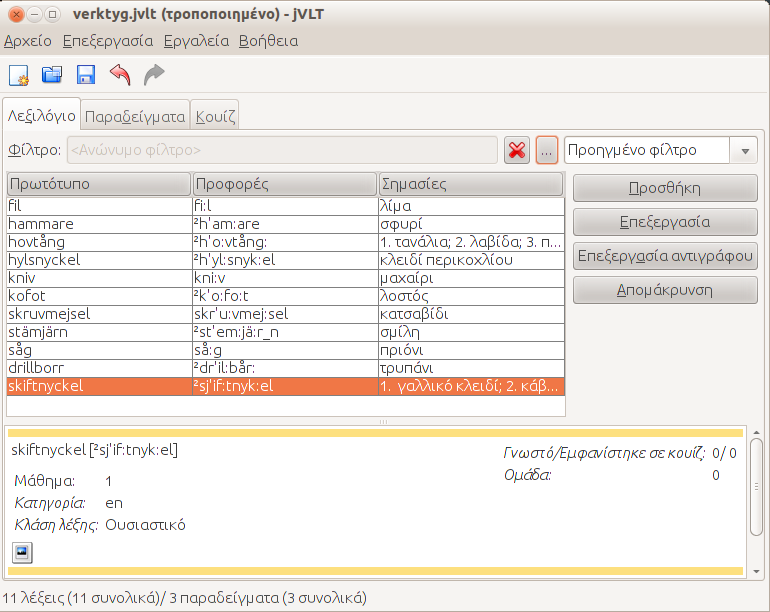

jVLT - Ένα εργαλείο εκμάθησης λεξιλογίου
Τεκμηρίωση
|
jVLT - Ένα εργαλείο εκμάθησης λεξιλογίου |
|
Τεκμηρίωση
|
Το εγχειρίδιο του jVLTΑυτές οι σελίδες περιγράφουν την βασική λειτουργικότητα του jVLT. Το jVLT είναι ένα εργαλείο που επιτρέπει τη διαχείριση και εκμάθηση λεξιλογίου, όπως και τον ορισμό παραδειγμάτων που βοηθούν την απομνημόνευση της σημασίας των λέξεων. Το jVLT μπορεί επιπλέον να εκτελέσει κουίζ χρησιμοποιώντας ένα σύστημα flash cards, παρόμοιο του επιλεκτικού συστήματος μάθησης που προτάθηκε από τον γερμανό ψυχολόγο Sebastian Leitner.Πίνακας περιεχομένων. |